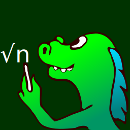
Mozilla
MathML Project
A Mozilla Project for
Math on the Web
1) History of the Project
-
1989-1990: Invention of the Web by researchers at CERN.
- January 1998: Announcement to open Netscape Source Code.
- April 1998: MathML 1.0 Released.
1) History of the Project
-
1989-1990: Invention of the Web by researchers at CERN.
- January 1998: Announcement to open Netscape Source Code.
- April 1998: MathML 1.0 Released.
- May 1999: Launch of the Project by Volunteer Contributors.
- February 2001: MathML 2.0 Released.
- June 2002: Mozilla 1.0 Released with MathML support.
1) History of the Project
-
1989-1990: Invention of the Web by researchers at CERN.
- January 1998: Announcement to open Netscape Source Code.
- April 1998: MathML 1.0 Released.
- May 1999: Launch of the Project by Volunteer Contributors.
- February 2001: MathML 2.0 Released.
- June 2002: Mozilla 1.0 Released with MathML support.
- July 2003: Creation of the Mozilla Foundation.
- November 2004: Firefox 1.0 Released.
- ...
1) History of the Project
-
1989-1990: Invention of the Web by researchers at CERN.
- January 1998: Announcement to open Netscape Source Code.
- April 1998: MathML 1.0 Released.
- May 1999: Launch of the Project by Volunteer Contributors.
- February 2001: MathML 2.0 Released.
- June 2002: Mozilla 1.0 Released with MathML support.
- July 2003: Creation of the Mozilla Foundation.
- November 2004: Firefox 1.0 Released.
- ...
- October 2010: MathML 3.0 Released.
- June 2013: Launch of Mozilla Science Lab.
2) MathML is the markup
language used in HTML5
to write math...
MathML integrates
well in HTML
| PNG |
blah blah |
| MathML |
blah
blah |
MathML integrates
well in HTML
| PNG |
|
| MathML |
|
MathML integrates
well in HTML
| PNG |
|
| MathML |
|
This is actually an
SVG image...
...with a MathML
equation inside!
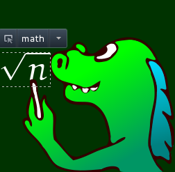
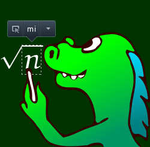
MathML can be styled
with CSS
mo { color: #faa; }
mfrac { text-shadow: #aaf 10px 12px 1px; }
MathML DOM can be
modified via JavaScript
mfrac.setAttribute('bevelled', ...);
MathML is compatible
with Unicode & Bidi
3) MathML is available
in any Gecko-based
applications...
MathML in Firefox
(MDN wiki)
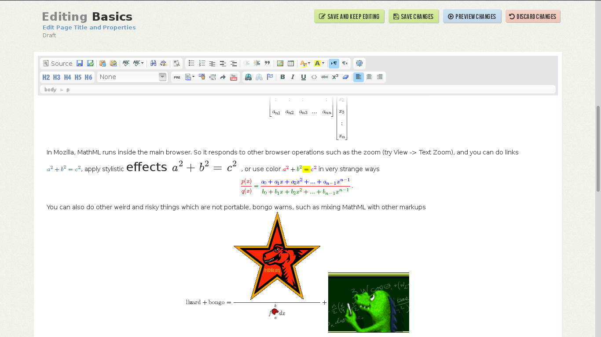
MathML in Firefox
(Jacques Distler's blog)
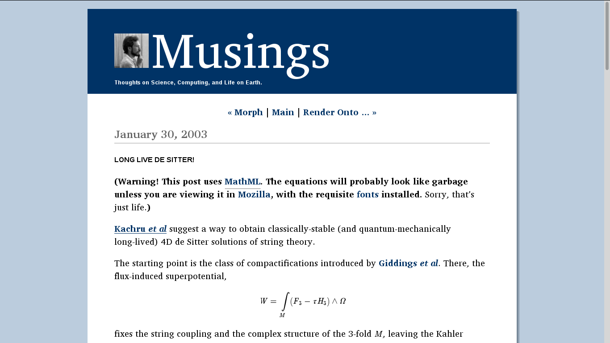
MathML in Firefox
(MathJax NativeMML)
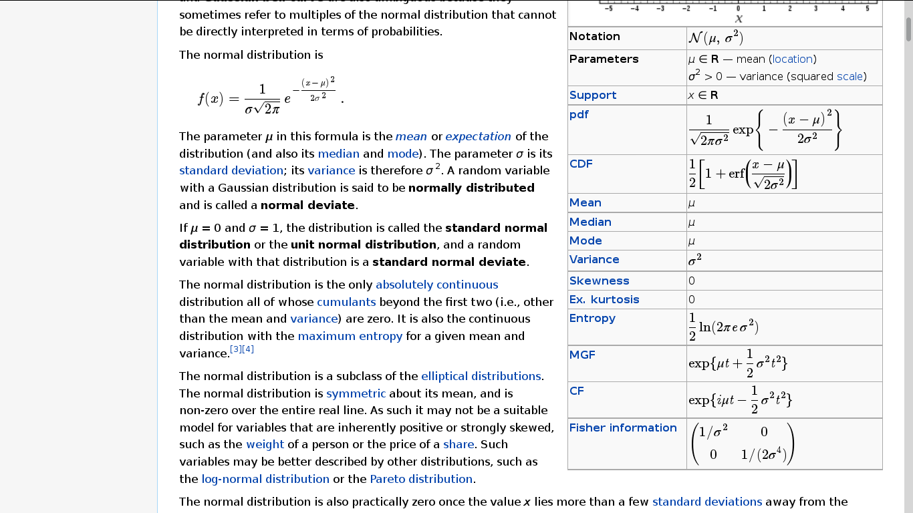
MathML in Firefox
(Firemath add-on)
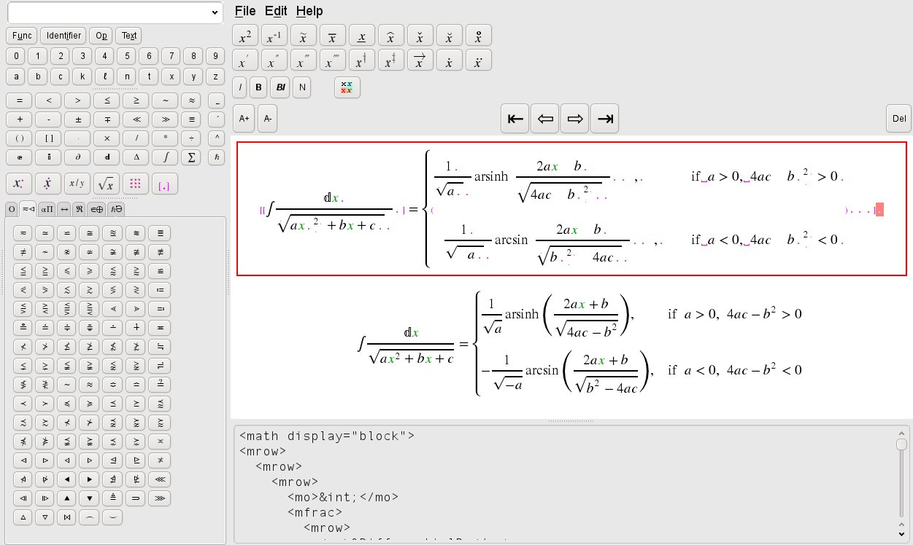
MathML in Firefox
(EPUBReader add-on)
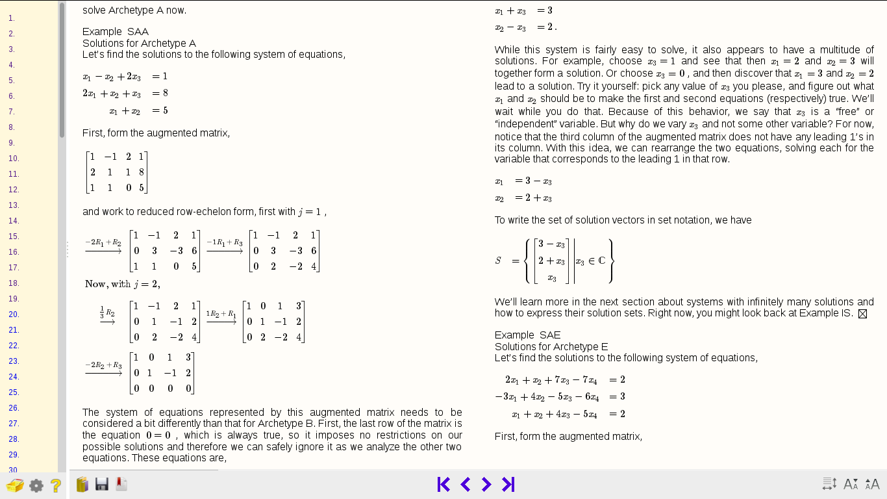
MathML in Thunderbird
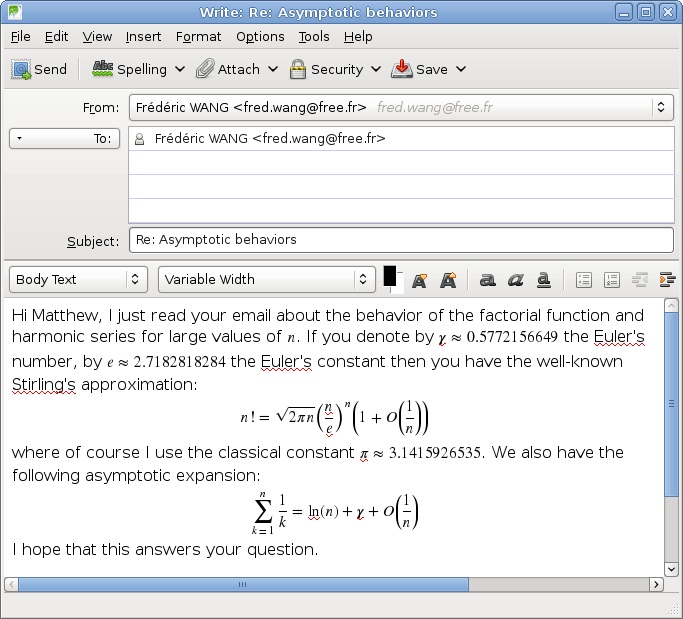
MathML in InstantBird
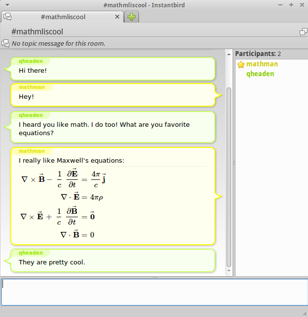
MathML in BlueGriffon
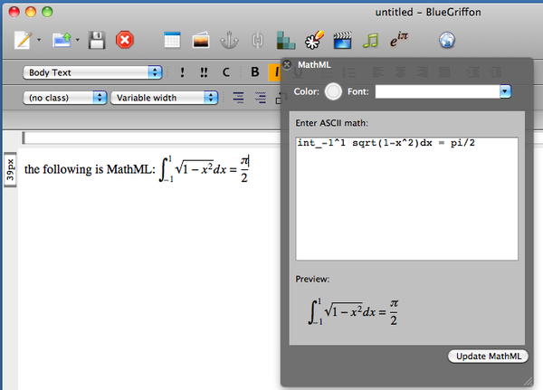
4) There are many ways
to write MathML...
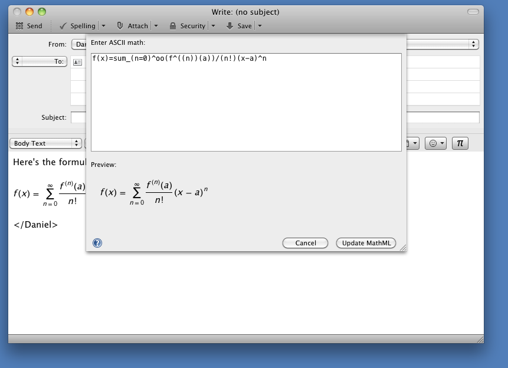
Client-side conversion
(ASCIIMathML)
...
<script src="ASCIIMathML.js" ...>
</head>
<body>
`a/b + c^2 = sqrt t - 4 v_0`
...
Client-side conversion
(MathJax)
<script type="text/x-mathjax-config">
MathJax.Hub.Config({
MMLorHTML: { prefer: { Firefox: "MML" } }
});
</script>
<script src="MathJax.js?config=TeX-AMS-MML_HTMLorMML.js"...>
...
\[ \sum_{i=0}^{n-1} e^{i \pi n} = 0 \]
Command line tools
(itex2MML)
input.html
<body>
<p style="color: #faa">$\sqrt{a^2-3c}$</p>
</body>
$ cat input.html | itex2MML > output.html
$ firefox output.html
Command line tools
(LaTeXML)
Convert a random LaTeX paper into a Web page!
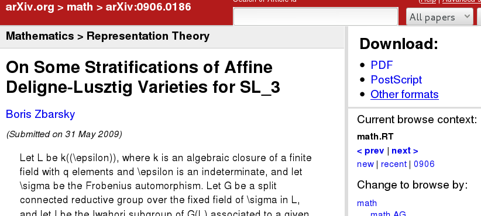
$ latexml --dest thesis.xml thesis.tex
$ latexmlpost --dest html/thesis.html --format=html5 \
--splitat=section thesis.xml
$ firefox thesis.html
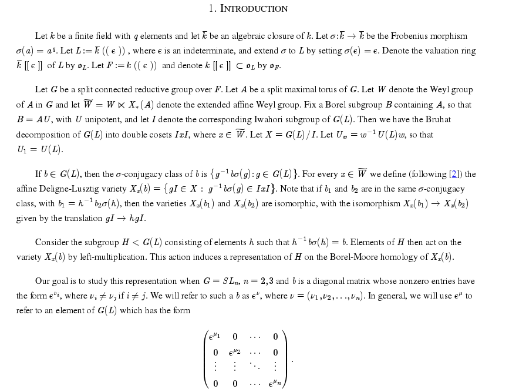
WYSIWYG editor
(LibreOffice)
Tools → Options → Advanced → Experimental Features
to enable the visual equation editor...
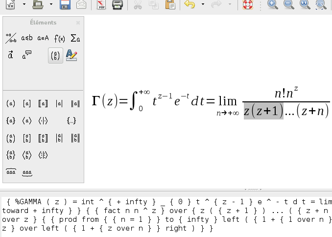
WYSIWYG editor
(LibreOffice)
Export your document into XHTML+MathML...
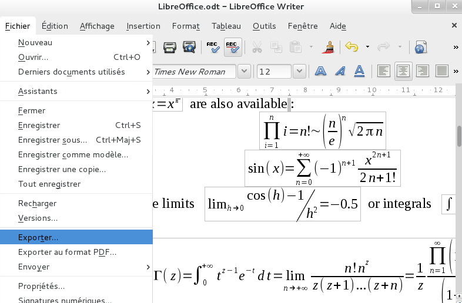
WYSIWYG editor
(LibreOffice)
... and view it in Firefox!
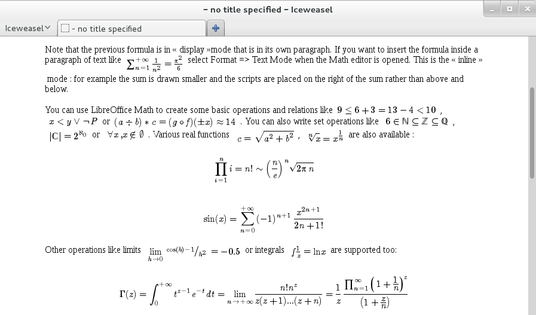
Handwriting Recognition
(MyScript Web Equation)
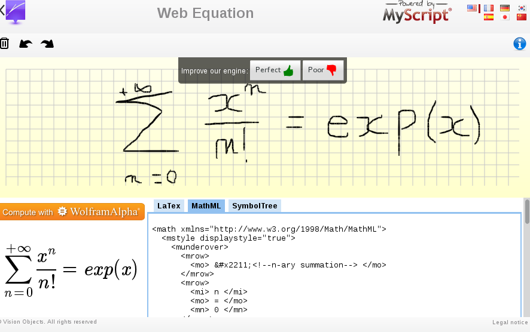
5) Work in Development
and Future Projects
MediaWiki Project
- MathJax mode for anonymous users on Wikipedia.
- Fast Server-side TeX-To-MathML Conversion.
- Math Search Engine.
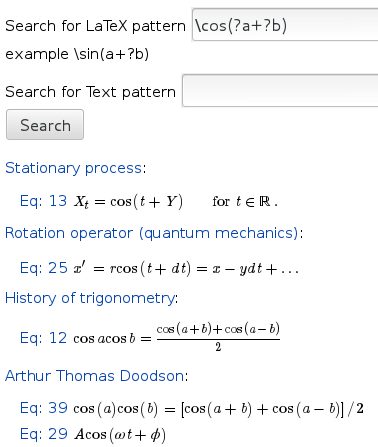
MathJax Project
- Fall 2013: MathJax 2.3 with better font support.
- MathJax extension with Math Accessibility Enhancements.
- Setting Gecko's Native MathML as the default mode?
- Improving WebKit's MathML support.
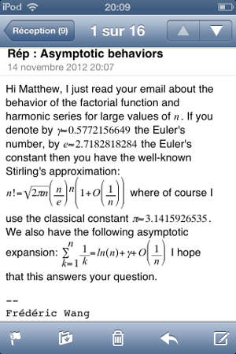
Authoring tools
- Fall 2013: New release of LaTeXML, with EPUB export and
better support for LaTeX graphic packages
- January 2014: LibreOffice 4.2 with Improved MathML Export.
Mozilla Project
Wish to get involved? Here are some ideas:
- Complete Gecko's MathML support (bugs 534959 and 525772)
- Fix issues that prevent Gecko's Native MathML
from being the default in MathJax (bug 687809)
Mozilla Project
Wish to get involved? Here are some ideas:
- Complete Gecko's MathML support (bugs 534959 and 525772)
- Fix issues that prevent Gecko's Native MathML
from being the default in MathJax (bug 687809)
- Improve Font Installation (bugs 770005, 467729 and 648548)
- Add support for more Open Type Math fonts (bug 407059)
Mozilla Project
Wish to get involved? Here are some ideas:
- Complete Gecko's MathML support (bugs 534959 and 525772)
- Fix issues that prevent Gecko's Native MathML
from being the default in MathJax (bug 687809)
- Improve Font Installation (bugs 770005, 467729 and 648548)
- Add support for more Open Type Math fonts (bug 407059)
- Make the
editor/ aware of MathML (bug 78128)
- Implement MathML Clipboard Specification (bug 539506)
Mozilla Project
Wish to get involved? Here are some ideas:
- Complete Gecko's MathML support (bugs 534959 and 525772)
- Fix issues that prevent Gecko's Native MathML
from being the default in MathJax (bug 687809)
- Improve Font Installation (bugs 770005, 467729 and 648548)
- Add support for more Open Type Math fonts (bug 407059)
- Make the
editor/ aware of MathML (bug 78128)
- Implement MathML Clipboard Specification (bug 539506)
- Create an EPUB reader or other math tools
for FirefoxOS
- Make MathML accessible in Gecko (bug 916419).
Make the FireVox extension work with the latest version of Gecko?
Thanks for Watching!
- This slideshow and more resources are available here:
https://github.com/fred-wang/MozSummitMathML
- Reaching the Community:
#mathml and
dev-tech-mathml@lists.mozilla.org
- Have questions? Contact
Fred Wang (
<fred.wang.free.fr>) or Karl Tomlinson (<karlt@karlt.net>)
This page contains
advanced MathML
features. Please use
a Gecko browser :-(